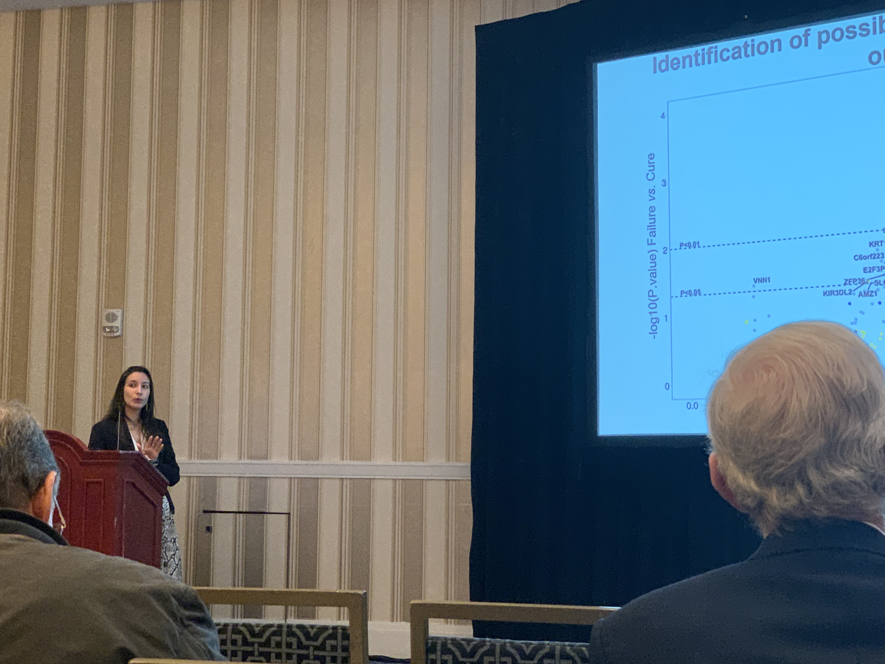
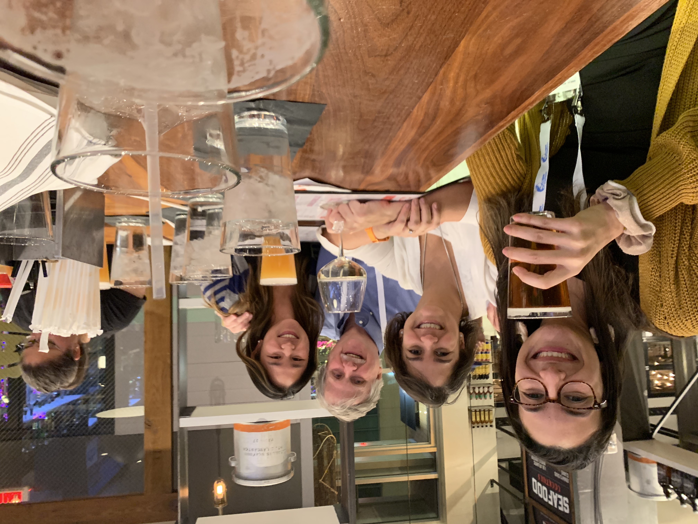
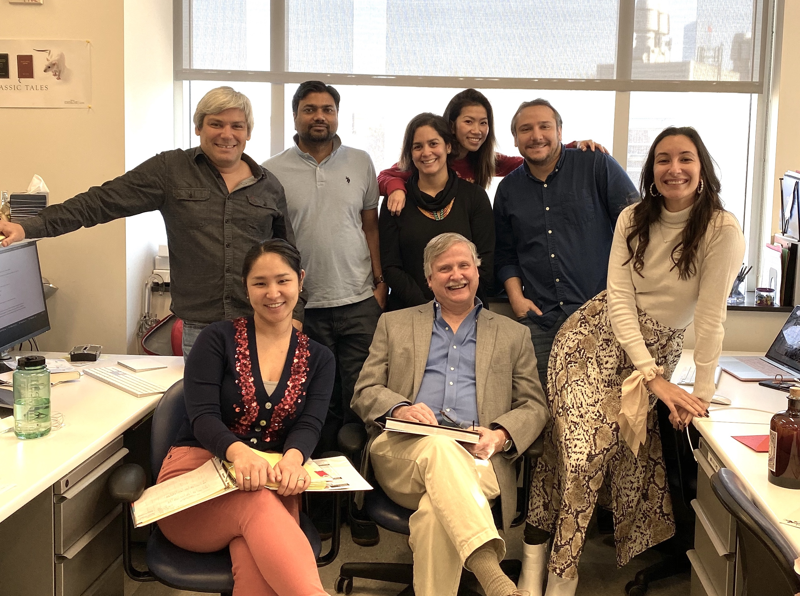
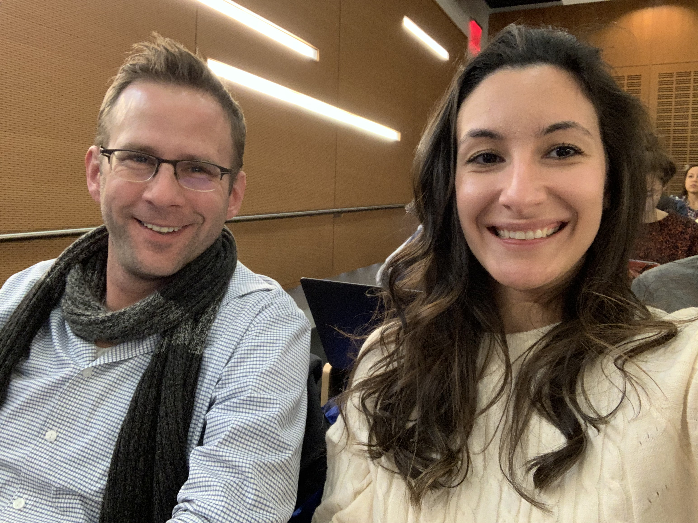

Camila Farias Amorim
Immunology - Computational Biology - Data Science
About Me!
Still got to add something about me!
Recent Research
Recent research here
Galery

Presentation at the ASTMH 2019. At that time, we identified gene biomarkers for clinical outcome in cutaneous leishmaniasis

Happy hour and dinner in Oxon Hill, MD at the ASTMH 2019 - @novaislab @christinakgo @pscottlab

The @pscottlab in early 2019! Philadelphia, PA

Dan and I at the #singlecellgenomicsday 2019, NY @hostmicrobe
Publications and Links